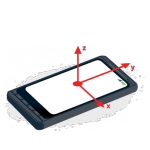
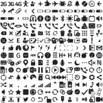
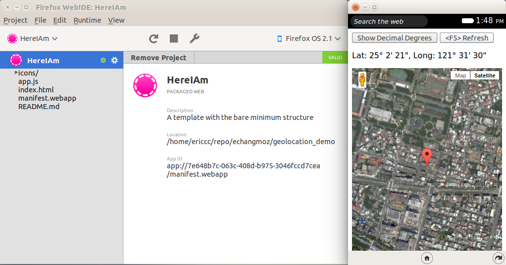
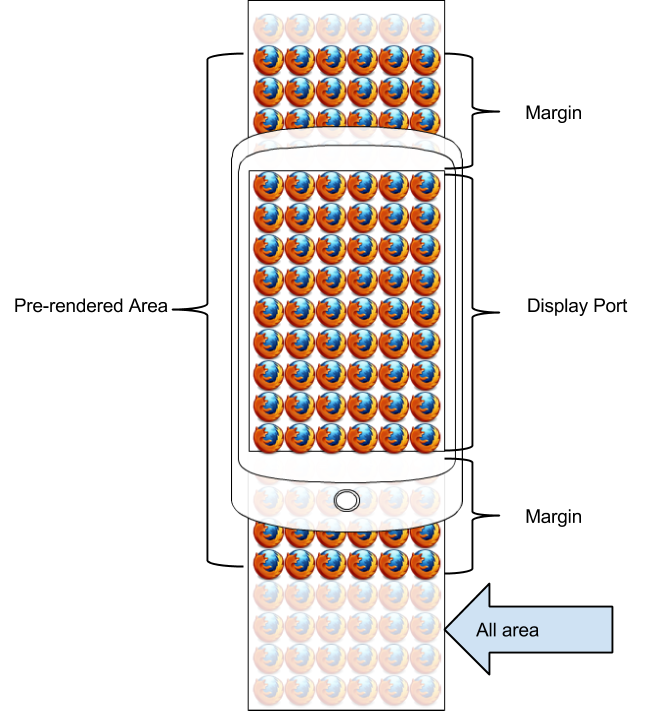
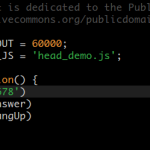
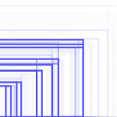
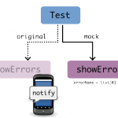
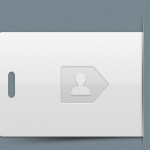

運用 Web 技術打造電視遙控器的操作環境

當初我們決定要將 Firefox OS 應用到智慧電視 (Smart TV) 上時，第一個遇到的問題便是操作介面的不同。在一般的電視使用情境下，使用者通常不會有滑鼠或是觸碰螢幕，能拿來操作的是那少少幾個按鍵的電視遙控器 (好吧，其實現在電視遙控器上的按鍵還不少)。在將 Firefox OS 這樣一個...
48 篇文章

















